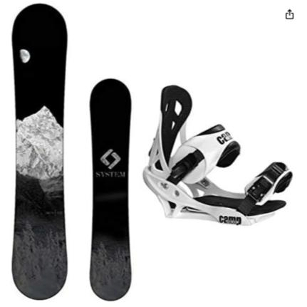

System MTN Snowboard
Cost: $300
Rating: ★★★★☆
Looks: Clean, minimalist graphic - really sharp design.
Ride Feel: Light and floaty with good grip. Smooth in powder.
Tech: CRCX camber for fewer edge catches, 3D poplar core adds spring.
Best For: New and intermediate riders who want to progress.
Includes: Summit bindings - comfy, padded, easy to adjust.
Downsides: Not ideal for big park jumps. Scratches easily.
David Approved

I had this board for only about 10 runs but this board is engineered to be riden by beginners with how Rocker heavy it is.
The Rocker allows the board to be almost self balancing, helping beginners to not catch that gnarly edge and take a mouthful of snow.
If you've never had a snowboard before this kit may seem pricey, but take a look around for other boards of the same level. They will ALWAYS be at least as expensive as this one, usually moreso.
The only downside is that the rocker makes the board slightly too beginner friendly, making the board almost have a skill ceiling.
Overall, if you are just trying to get started and want your own board for a few years, this is a great pick.
Solid 8/10
Black Diamond Momentum Harness Kit
Cost: ~$90
Rating: ★★★★★
Includes: Harness, chalk bag & ball, ATC device, locking carabiner.
Comfort: Dual Core padding feels great for long sessions.
Ease of Use: trakFIT legs are fast to tighten. Everything is beginner-ready.
Trust Factor: Black Diamond quality - works for gym or outdoor climbing.
Limitations: Not for expert multi-pitch. ATC is basic, chalk bag is decent.
Rocky Approved
After extensive testing, this is probably the best all-in-1 climbing kit.
It comes in many options of sizing for climbers from Extra Small all the way to Double X Large, consistent with the durable quality across the board.
It seems a bit pricy for climbing gear but trust Rocky, you never wanna go cheap when it comes to safety. Plus, it often goes on sales up to 25% off where it can drop down to prices in the 70 dollar range.
Just from the picture you can see the harness, clips, chalk and bag, but what you can't see if when you'll need to upgrade into anything else. It has not just the touch for beginners, but also the ability to grow with the gear. Even Rocky feels completely comfortable sending some of the hardest runs in this stuff.
This kit checks all the boxes and is one of the best starter kits on the market.